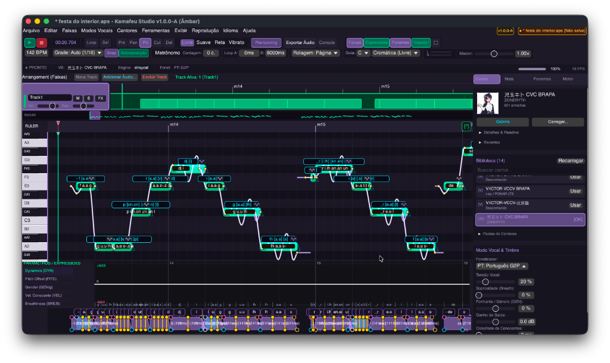
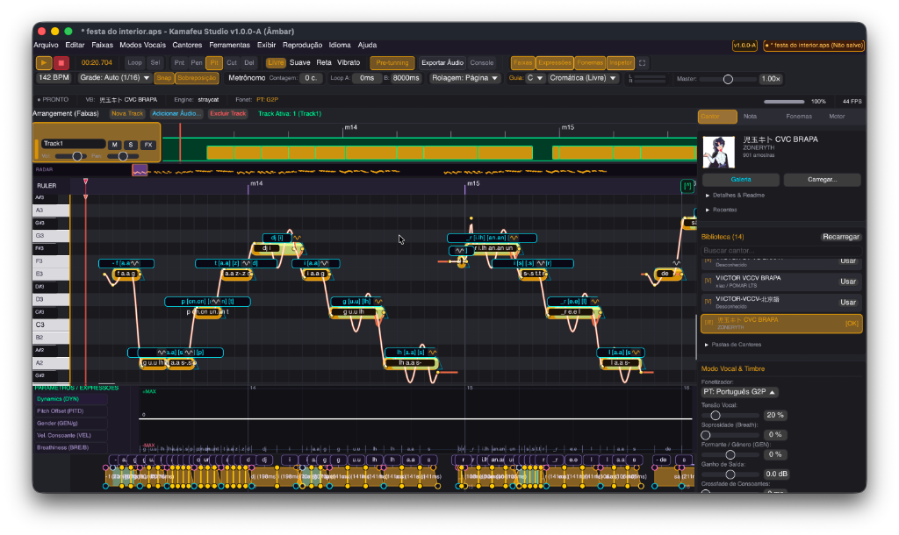
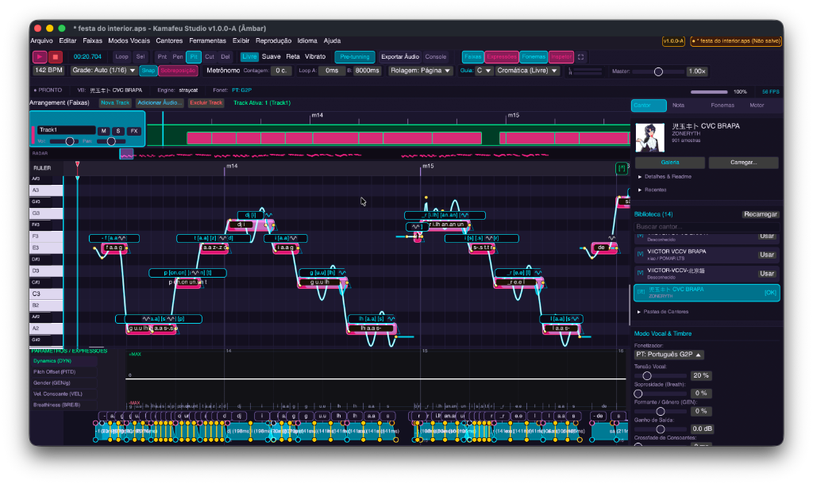
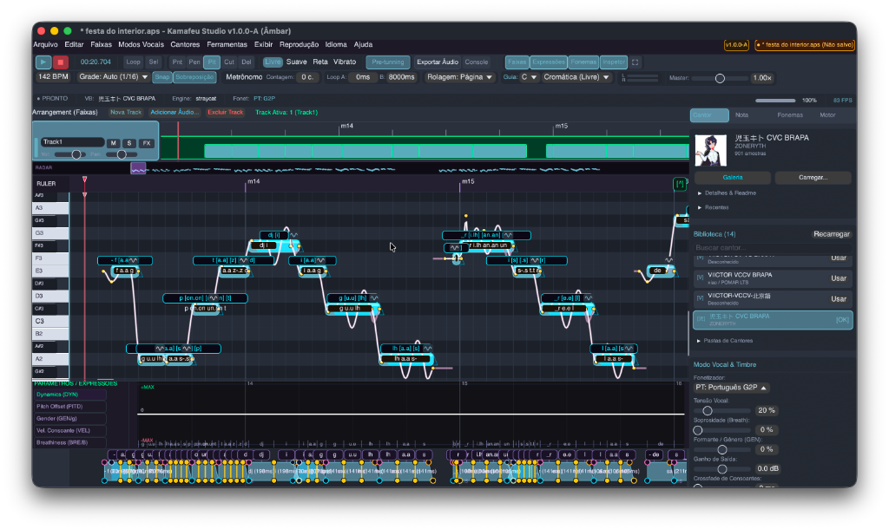
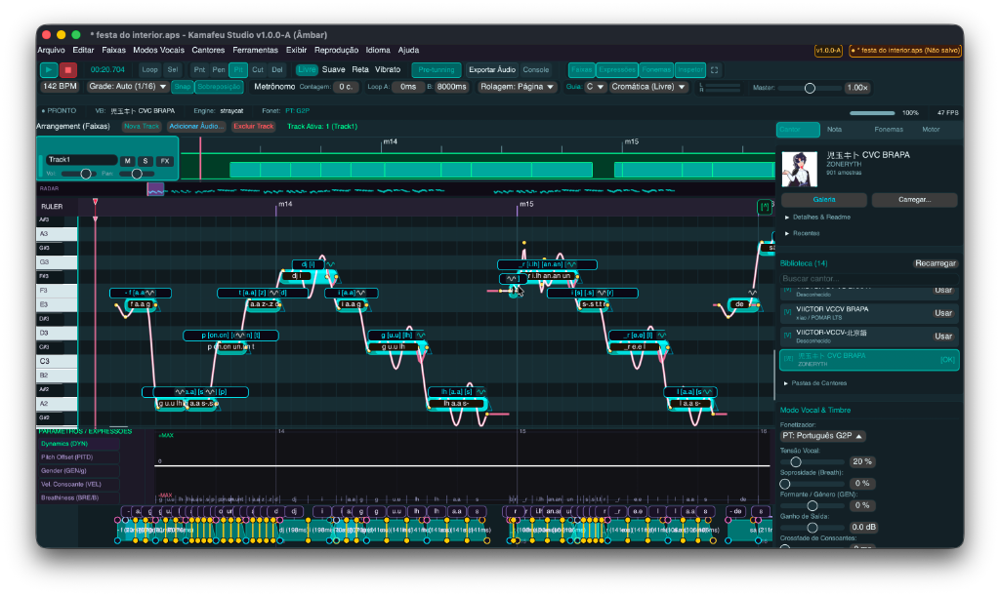

O Kamafeu Studio é um ambiente de alta precisão para composição, edição e síntese de canto voltado para o ecossistema UTAU e OpenUtau. Controle técnico direto e determinístico sobre amostragem, calibração oto.ini, afinação e emenda acústica.
Ferramentas de seleção, lápis, corte, borracha e curva contínua de afinação. Suporte a portamento, vibrato, curvas Bézier e guia de escalas musicais.
Suporte integrado a Japonês (CV, VCV, CVVC), Português Brasileiro (BRAPA VCCV/CVC com G2P) e Inglês VCCV. Leitura e escrita de arquivos oto.ini.
Motor de afinação VENUS (análise YIN e reconstrução espectral) e wavtool Andromeda com envelopes de 5 pontos e crossfade equal-power.
Equalizador gráfico de 31 bandas, compressor dinâmico, reverb estéreo e alinhamento de fase de onda para eliminação de cancelamentos harmônicos.
Compatível nativamente com straycat-rs e binários externos via protocolo CLI do UTAU (com suporte a Wine no macOS e Linux).
Ferramenta dedicada para calibração de bancos de voz, ajuste de offset, consonant, cutoff, preutterance e overlap diretamente na forma de onda.
Importação e exportação direta entre os principais formatos do ecossistema vocal.
| Formato | Extensão | Importação | Exportação | Descrição |
|---|---|---|---|---|
| Saturno Project | .aps |
Sim | Sim | Formato nativo do Kamafeu Studio em JSON estruturado com multifaixa e FX. |
| OpenUtau Project | .ustx |
Sim | Sim | Formato YAML do OpenUtau com curvas de afinação e expressões dinâmicas. |
| UTAU Sequence | .ust |
Sim | Sim | Formato clássico do UTAU baseado em seções de texto e envelopes. |
| Standard MIDI | .mid, .midi |
Sim | Sim | Intercâmbio de notas, tempo e pitch wheel com DAWs tradicionais. |
| Synthesizer V | .svp |
Sim | Sim | Conversão de trilhas, notas e divisões silábicas de projetos SynthV. |
| VOCALOID Sequence | .vsqx |
Sim | Sim | Sequências XML do VOCALOID 3/4 com parâmetros de expressão. |
| Kamafeu Voicebank | .kfv |
Sim | Sim | Pacote compactado contendo gravações WAV, oto.ini e metadados. |
Personalização completa de cores e contraste via atalho Ctrl + Alt + T.

Pomar Neon: Paleta esmeralda padrão com alto contraste para edição de notas.

Melodyne Classic: Visual em tons dourados e âmbar para afinação precisa.

Cyberpunk: Contraste synthwave em magenta e ciano.

Nordic Slate: Tema sóbrio e minimalista em azul ardósia escuro.

Voz-a-loide Teal: Tons azul-turquesa inspirados nos sintetizadores tradicionais.
Requisitos: Rust 1.82 ou superior instalado via rustup.rs.
# 1. Clonar repositório
git clone https://github.com/studiopomar/kamafeu.git
cd kamafeu
# 2. Compilar em modo release
cargo build --release --bins
# 3. Executar o Kamafeu Studio
cargo run --release --bin kamafeu
# 4. Executar o utilitário Copaiba
cargo run --release --bin copaibaRequer bibliotecas do sistema: libasound2-dev, libxcb-dev, libfontconfig1-dev.
macOS: Xcode Command Line Tools. Windows: Visual Studio C++ Build Tools (MSVC).